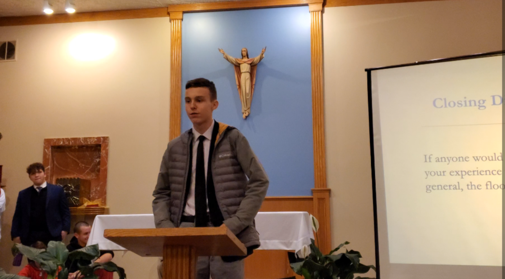

P-Cubed
November 21, 2019
Editor’s note: This speech is actually transcribed from my YouTube video, “P-Cubed: A Saint John’s Experience”, published on November 26, 2019. The italicized words were said by the audience listening to me.
Theme: Thanksgiving
I definitely want to say, besides being thankful for my family, in which I am, I am thankful for P-Cubed, just because of how much it has changed my life. Umm, I got Oscar here filming for me, which brings me into my next point.
I’m thankful for those who have supported me over the years, especially with me, let’s make a bold statement here, it might be an unpopular opinion, being a P-Cubed leader. I’m thankful for Mr. Paul for giving me a chance.
I’d also like to thank you for the support on my, very little people in this room know about my YouTube channel. Plug it, plug it! Uh, subscribe to Ben Chase! The one with the picture of me on there. What’s it called? Ben Chase! (Editor’s note: This is very loud.)
If you’re not subscribed, do it. Ayy! (Editor’s note: Somebody did it and held up their phone.) I’ve been making videos for nearly six years-shh-I've been making videos for nearly six years now, and my anniversary will be coming up in January.
Yessir. How many subscribers? I have 70 subscribers. 71, 75, 77! Woohoo! He’s now up to 80, 81! Every year, on my anniversary, I put out a video. 84! Guys, guys, quiet down for a minute. 88!
Alright, so every year on my anniversary, which is January 17th, I put out a video to celebrate one extra year passing, and the announcement I’d like to make is that-89-this year, the sixth anniversary, will be called “Creator. Leader. Pioneer.” (Editor’s note: No, this was eventually called “Six Years on YouTube”. Boring, I know.) and is a reference to how great P-Cubed has been, especially to the development of me, to the development of the channel, and to help me get friends and keep the channel going. Thank you. Yessir!
Me giving this speech.